Chapitre 5 Analyse en composantes principales et arbres de décision
Objectifs du chapitre
- Comprendre le principe de l’analyse en composantes principales (ACP).
- Réaliser une ACP avec
FactoMineR, lire le cercle des corrélations et le plan des individus. - Utiliser des variables illustratives (supplémentaires) quantitatives et qualitatives pour interpréter les axes.
- Construire, élaguer et utiliser un arbre de décision avec
rpart. - Évaluer un classifieur : matrice de confusion, sensibilité, spécificité, courbe ROC et AUC.
library(tidyverse)
library(FactoMineR) # ACP
library(factoextra) # graphiques des résultats d'ACP
library(rpart) # arbres de décision
library(pROC) # courbes ROC
library(ISLR) # jeux de données OJ et Caravan
source("R/boutique.R")5.1 Analyse en composantes principales (ACP)
5.1.1 Le problème
On dispose de \(n\) individus décrits par \(p\) variables quantitatives. Avec \(p = 2\), un nuage de points suffit pour tout voir ; avec \(p = 10\), c’est impossible. L’ACP cherche à résumer le tableau par un petit nombre de nouvelles variables, les composantes principales, qui :
- sont des combinaisons linéaires des variables d’origine ;
- sont non corrélées entre elles ;
- conservent le maximum de variabilité (d’« information ») du nuage.
Géométriquement, on cherche le plan sur lequel la projection du nuage de points est la moins déformée possible, comme on choisirait l’angle de vue qui montre le mieux un objet en 3D sur une photo.
L’ACP répond à deux questions :
- Individus : quels individus se ressemblent ? Quels profils se dégagent ?
- Variables : quelles variables sont liées entre elles ? Peut-on résumer plusieurs variables corrélées par une seule dimension ?
En marketing, elle sert par exemple à résumer des dizaines d’indicateurs de comportement client en deux ou trois dimensions interprétables, à construire des cartes perceptuelles (positionnement des marques selon les notes données par des consommateurs), ou à préparer une segmentation (chapitre 6).
5.1.2 Principe mathématique
- Centrer-réduire les variables : \(z_{ij} = (x_{ij} - \bar x_j)/s_j\). C’est l’ACP normée, à utiliser dès que les variables ont des unités ou des ordres de grandeur différents (euros, jours, nombres de commandes).
- Calculer la matrice des corrélations \(R\) (\(p \times p\)).
- Diagonaliser \(R\) : ses vecteurs propres \(u_1, \dots, u_p\) donnent les directions des axes, ses valeurs propres \(\lambda_1 \ge \dots \ge \lambda_p\) la variance portée par chaque axe.
- Coordonnées des individus sur l’axe \(k\) : \(F_k = Z u_k\).
En ACP normée, la variance totale (l’inertie) vaut \(p\), et la part d’inertie expliquée par l’axe \(k\) est \(\lambda_k / p\).
# L'ACP « à la main » sur trois variables de mtcars
Z <- scale(mtcars[, c("mpg", "hp", "wt")]) # centrer-réduire
R <- cor(Z)
decomposition <- eigen(R)
decomposition$values # valeurs propres ; leur somme vaut 3#> [1] 2.5382 0.3521 0.1097#> [1] 0.84606 0.11736 0.036575.1.3 Exemple 1 : le décathlon
Le jeu decathlon (package FactoMineR) est l’exemple de référence de
l’ACP : les performances de 41 athlètes aux dix épreuves du décathlon, lors de
deux compétitions (Décastar et Jeux olympiques de 2004), ainsi que leur
classement et leur nombre de points.
#> 100m Long.jump Shot.put High.jump 400m 110m.hurdle
#> SEBRLE 11.04 7.58 14.83 2.07 49.81 14.69
#> CLAY 10.76 7.40 14.26 1.86 49.37 14.05
#> KARPOV 11.02 7.30 14.77 2.04 48.37 14.09
#> BERNARD 11.02 7.23 14.25 1.92 48.93 14.99
#> YURKOV 11.34 7.09 15.19 2.10 50.42 15.31
#> WARNERS 11.11 7.60 14.31 1.98 48.68 14.23Les dix épreuves sont les variables actives : elles construisent les
axes. Rank et Points sont des variables quantitatives illustratives,
Competition une variable qualitative illustrative : elles ne participent
pas au calcul des axes, mais aident à les interpréter.
res_acp <- PCA(decathlon,
quanti.sup = 11:12, # Rank, Points
quali.sup = 13, # Competition
scale.unit = TRUE, # ACP normée
graph = FALSE)5.1.3.1 Combien d’axes retenir ?
#> eigenvalue percentage of variance cumulative percentage of variance
#> comp 1 3.2719 32.719 32.72
#> comp 2 1.7371 17.371 50.09
#> comp 3 1.4049 14.049 64.14
#> comp 4 1.0569 10.569 74.71
#> comp 5 0.6848 6.848 81.56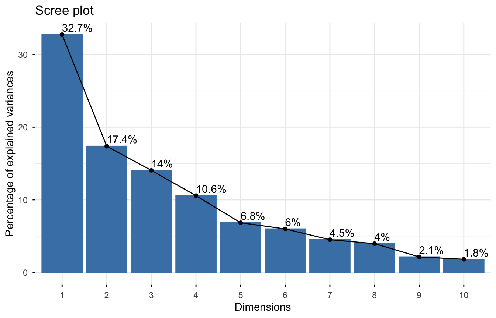
Critères usuels (à combiner, pas à appliquer mécaniquement) :
- le coude de l’éboulis des valeurs propres ;
- la règle de Kaiser (ACP normée) : garder les axes de valeur propre supérieure à 1, c’est-à-dire ceux qui résument plus qu’une variable d’origine ;
- un pourcentage d’inertie cumulé suffisant ;
- surtout, l’interprétabilité des axes.
Ici, les deux premiers axes expliquent environ 50 % de l’inertie. C’est modeste, ce qui est fréquent quand les variables sont nombreuses et peu corrélées.
5.1.3.2 Le cercle des corrélations
Chaque variable est représentée par une flèche dont les coordonnées sont ses corrélations avec les deux axes.
fviz_pca_var(res_acp, repel = TRUE, col.var = "cos2",
gradient.cols = c("grey70", "steelblue", "darkblue"))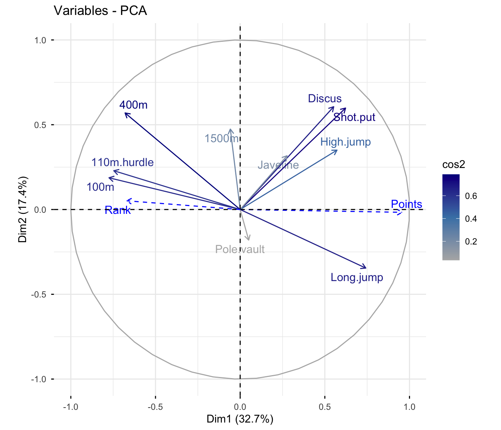
Règles de lecture
- Une flèche proche du cercle : variable bien représentée dans le plan. Une flèche courte est mal représentée ; on ne l’interprète pas.
- Deux flèches proches : variables corrélées positivement.
- Deux flèches opposées : corrélées négativement.
- Deux flèches orthogonales : non corrélées (si elles sont bien représentées).
Interprétation : le premier axe oppose les épreuves de vitesse (100 m, 400 m, 110 m haies, dont les temps faibles sont bons) au saut en longueur. Comme un bon sprinteur a un temps faible, les variables de course sont à l’opposé du saut en longueur, alors qu’il s’agit des mêmes qualités athlétiques. Le deuxième axe est porté par les lancers (poids, disque) mais aussi par le 400 m et le 1 500 m : il distingue les athlètes puissants mais plus lents sur les courses longues (en haut) des athlètes plus légers et endurants (en bas).
La variable illustrative Points est très corrélée au premier axe : celui-ci
mesure donc la performance globale.
#> Dim.1 Dim.2
#> 100m 18.3 2.0
#> Long.jump 16.8 6.9
#> Shot.put 11.8 20.6
#> High.jump 10.0 7.1
#> 400m 14.1 18.7
#> 110m.hurdle 17.0 3.0
#> Discus 9.3 21.2
#> Pole.vault 0.1 1.9
#> Javeline 2.3 5.8
#> 1500m 0.1 12.9#> Dim.1 Dim.2
#> 100m 0.60 0.04
#> Long.jump 0.55 0.12
#> Shot.put 0.39 0.36
#> High.jump 0.33 0.12
#> 400m 0.46 0.32
#> 110m.hurdle 0.56 0.05
#> Discus 0.31 0.37
#> Pole.vault 0.00 0.03
#> Javeline 0.08 0.10
#> 1500m 0.00 0.225.1.3.3 Projection des individus
fviz_pca_ind(res_acp, repel = TRUE,
habillage = "Competition", # couleur selon la variable qualitative illustrative
addEllipses = TRUE)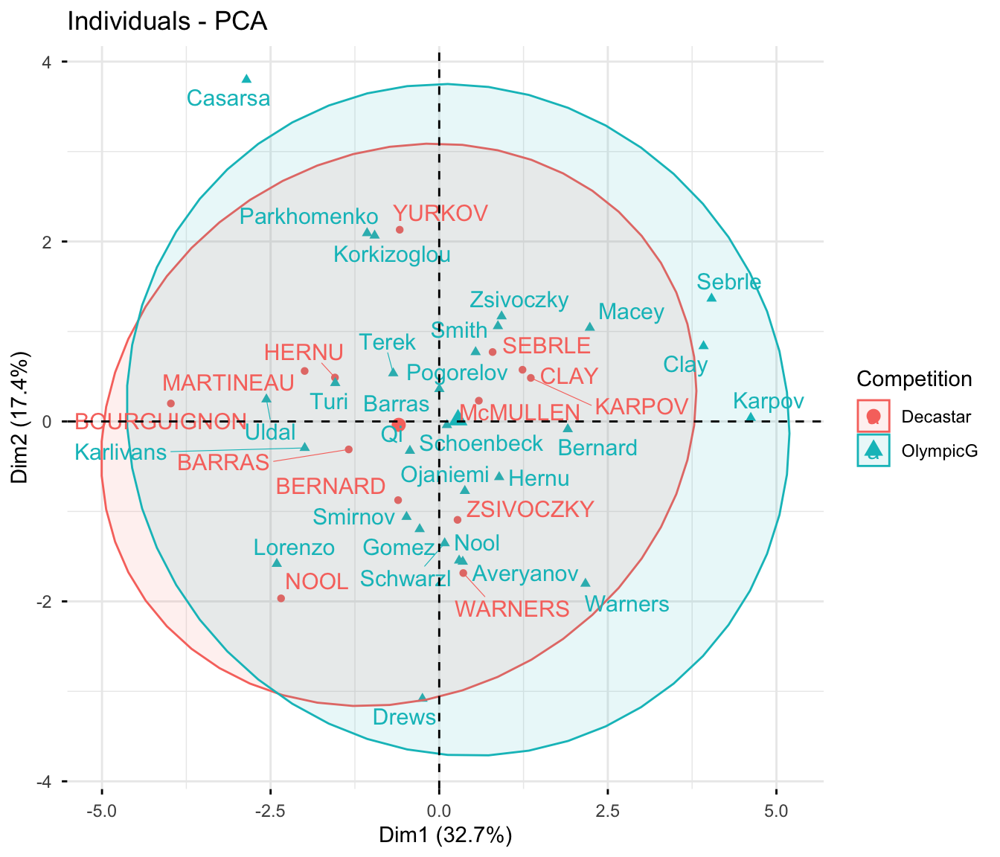
- Deux individus proches ont des profils semblables (s’ils sont bien
représentés :
cos2élevé). - La position d’un individu s’interprète grâce au cercle des corrélations :
un athlète à droite du plan est du côté des fortes valeurs de
Pointset de saut en longueur, donc des temps de course faibles. - Les contributions repèrent les individus qui pèsent le plus dans la construction d’un axe ; un individu au profil extrême peut à lui seul déterminer un axe.
5.1.3.4 Caractériser les axes avec les variables illustratives
La variable qualitative Competition est projetée au barycentre des
individus de chaque modalité. La fonction dimdesc() décrit automatiquement
chaque axe par les variables (actives et illustratives) qui lui sont le plus
liées, avec un test de significativité :
description <- dimdesc(res_acp, axes = 1:2)
description$Dim.1$quanti # corrélations des variables quantitatives avec l'axe 1#> correlation p.value
#> Points 0.9562 2.099e-22
#> Long.jump 0.7419 2.850e-08
#> Shot.put 0.6225 1.388e-05
#> High.jump 0.5719 9.362e-05
#> Discus 0.5525 1.802e-04
#> Rank -0.6705 1.616e-06
#> 400m -0.6796 1.028e-06
#> 110m.hurdle -0.7462 2.137e-08
#> 100m -0.7747 2.778e-09#> Dim.1 Dim.2
#> Decastar -1.43 -0.12
#> OlympicG 1.43 0.12La valeur-test (v.test) mesure l’écart entre la position moyenne d’une modalité et le centre du nuage ; au-delà de 2 en valeur absolue, l’écart est significatif (au seuil de 5 % environ). Les athlètes des Jeux olympiques sont plutôt du côté des bonnes performances sur l’axe 1, mais l’écart n’est pas significatif (v.test d’environ 1,4) : avec 41 athlètes, on ne peut pas conclure que les performances diffèrent selon la compétition.
5.1.4 Exemple 2 : le comportement des clients de la boutique
Appliquons la même démarche aux clients de la boutique en ligne. La fonction
indicateurs_clients() (chapitre 3) calcule pour chaque
client actif en 2025 ses indicateurs de comportement :
| Variable | Description |
|---|---|
recence |
jours depuis la dernière commande |
frequence |
nombre de commandes en 2025 |
montant_total |
chiffre d’affaires 2025 (€) |
panier_moyen |
montant moyen d’une commande (€) |
part_promo |
part des commandes passées avec un code promo |
nb_categories |
nombre de catégories de produits différentes achetées |
articles_par_commande |
nombre moyen d’articles par commande |
anciennete |
années depuis l’inscription |
indicateurs <- indicateurs_clients(lire_boutique("commandes"), lire_boutique("clients"))
clients_acp <- indicateurs |>
drop_na(age) |> # on écarte les clients sans âge renseigné
select(client_id, recence, frequence, montant_total, panier_moyen, part_promo,
nb_categories, articles_par_commande, anciennete, # variables actives
age, canal_acquisition, newsletter) |> # variables illustratives
column_to_rownames("client_id")
dim(clients_acp)#> [1] 1688 11Les huit indicateurs de comportement sont actifs. L’âge (quantitatif), le canal d’acquisition et l’abonnement à la newsletter (qualitatifs) sont illustratifs : on veut savoir s’ils sont liés aux profils de comportement, sans qu’ils construisent les axes.
acp_clients <- PCA(clients_acp, quanti.sup = 9, quali.sup = 10:11, graph = FALSE)
round(acp_clients$eig[1:4, ], 1)#> eigenvalue percentage of variance cumulative percentage of variance
#> comp 1 3.2 39.9 39.9
#> comp 2 1.9 24.1 64.0
#> comp 3 1.1 13.3 77.3
#> comp 4 0.7 8.3 85.6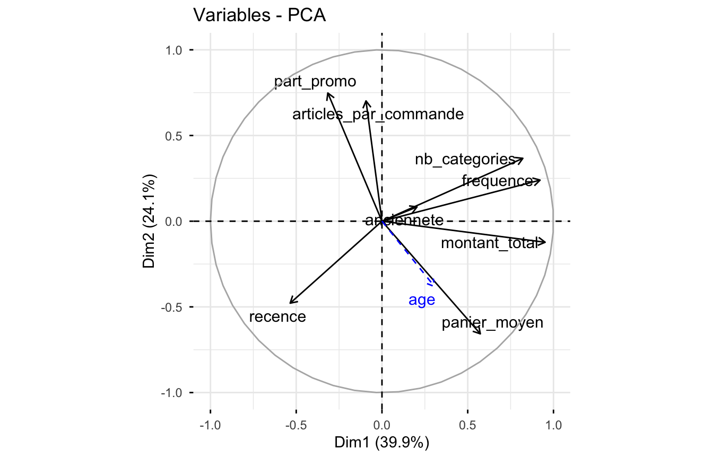
Les deux premiers axes résument environ 64 % de l’inertie, et se lisent clairement :
- Axe 1 — la valeur du client : fréquence, montant total et nombre de catégories achetées, opposés à la récence (un client récent a une récence faible). À droite, les bons clients, actifs et fidèles ; à gauche, les clients peu actifs.
- Axe 2 — le comportement promotionnel : part des commandes en promotion et nombre d’articles par commande, opposés au panier moyen. En haut, des clients qui achètent beaucoup d’articles bon marché en promotion ; en bas, des clients aux paniers élevés, peu sensibles aux promotions.
L’ancienneté est mal représentée dans ce plan : elle porte à elle seule le troisième axe.
#> Dim.1 Dim.2
#> 0.31 -0.38#> Dim.1 Dim.2
#> Affiliation -4.9 8.3
#> Direct 8.8 -8.2
#> Email 8.7 -2.1
#> Moteur de recherche -5.5 -4.8
#> Réseaux sociaux -4.2 6.4
#> Non -9.0 -6.2
#> Oui 9.0 6.2fviz_pca_ind(acp_clients, geom = "point", habillage = "canal_acquisition",
alpha.ind = 0.3, addEllipses = FALSE, mean.point = TRUE) +
labs(title = "Clients de la boutique selon leur canal d'acquisition")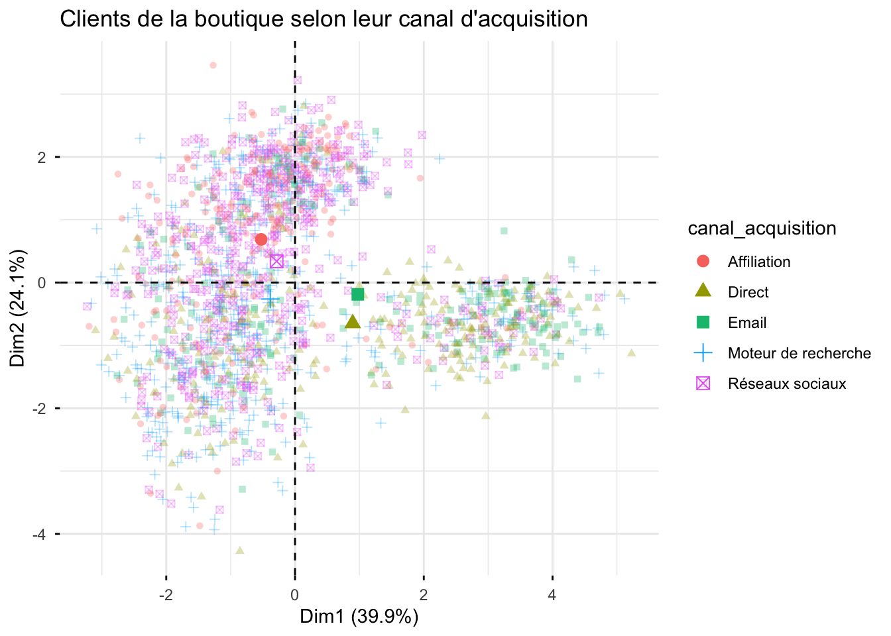
Les variables illustratives enrichissent l’interprétation :
- les clients venus en direct ou par email sont du côté des clients à forte valeur et peu sensibles aux promotions ;
- ceux venus par affiliation et réseaux sociaux sont du côté des promotions ;
- les abonnés à la newsletter sont plus engagés (axe 1) ;
- les clients plus âgés ont des paniers plus élevés et utilisent moins les promotions (corrélation négative avec l’axe 2).
Sur l’axe 1, toutes les valeurs-test des modalités dépassent 4 en valeur absolue : ces écarts ne sont pas dus au hasard.
Ces liens sont des associations. On ne peut pas en conclure que recruter par email « crée » de bons clients : les canaux attirent des publics différents. Rappelons aussi que ces données sont simulées ; sur des données réelles, les variables très asymétriques (montants) sont souvent transformées (logarithme) avant l’ACP, car quelques clients extrêmes peuvent sinon déterminer un axe à eux seuls.
Démarche d’une ACP
- Choisir les variables actives (quantitatives) et illustratives.
- ACP normée si les unités diffèrent.
- Choisir le nombre d’axes (éboulis, Kaiser, interprétabilité).
- Interpréter les axes avec le cercle des corrélations et les contributions.
- Interpréter le plan des individus à la lumière du cercle.
- Valider et enrichir l’interprétation avec les variables illustratives
(
dimdesc(), valeurs-test). - N’interpréter que les éléments bien représentés (
cos2).
Pour explorer une ACP de façon interactive, le package Factoshiny propose une
interface graphique : Factoshiny::PCAshiny(decathlon).
5.2 Arbres de décision
5.2.1 Principe
Un arbre de décision prédit une variable cible en posant une suite de questions binaires sur les variables explicatives (« la fidélité du client à la marque est-elle supérieure à 0,48 ? »). C’est une méthode supervisée : on connaît la réponse sur les données d’apprentissage.
- Classification : la cible est qualitative (achète / n’achète pas) ; chaque feuille prédit la classe majoritaire.
- Régression : la cible est quantitative (montant) ; chaque feuille prédit la moyenne.
Construction (algorithme CART) : on part de tous les individus. À chaque nœud, on cherche la variable et le seuil qui séparent le mieux les individus en deux groupes les plus homogènes possible vis-à-vis de la cible. On répète dans chaque groupe (partitionnement récursif).
L’homogénéité d’un nœud se mesure par son impureté. Pour des proportions de classes \(p_1, \dots, p_K\) :
- indice de Gini : \(G = 1 - \sum_k p_k^2\) ;
- entropie : \(H = -\sum_k p_k \log p_k\).
Un nœud pur (une seule classe) a une impureté nulle. On choisit la coupure qui fait le plus baisser l’impureté.
Points forts : très lisible (on peut l’expliquer à une équipe commerciale), gère variables quantitatives et qualitatives, peu sensible aux échelles, détecte des interactions. Points faibles : instable (un petit changement des données peut changer tout l’arbre), tendance au sur-apprentissage si l’arbre est trop profond.
5.2.2 Les données : le choix d’une marque de jus d’orange
On reprend le jeu OJ (chapitre 4) : 1 070 achats de
Citrus Hill (CH) ou de Minute Maid (MM), avec prix, remises, mises en avant
et fidélité du client (LoyalCH). Objectif : prédire la marque achetée, par
exemple pour cibler les clients à qui envoyer un bon de réduction MM.
On réserve un jeu de test dès le départ :
set.seed(2026)
indices_train <- sample(nrow(OJ), 800)
train <- OJ[indices_train, ]
test <- OJ[-indices_train, ]
table(train$Purchase)#>
#> CH MM
#> 485 3155.2.3 Construire l’arbre
set.seed(2026) # rpart utilise une validation croisée aléatoire
arbre <- rpart(Purchase ~ ., data = train, method = "class",
control = rpart.control(cp = 0.001))La formule Purchase ~ . signifie « Purchase expliqué par toutes les autres
variables ». Avec un paramètre de complexité cp très faible, l’arbre est
volontairement très détaillé :
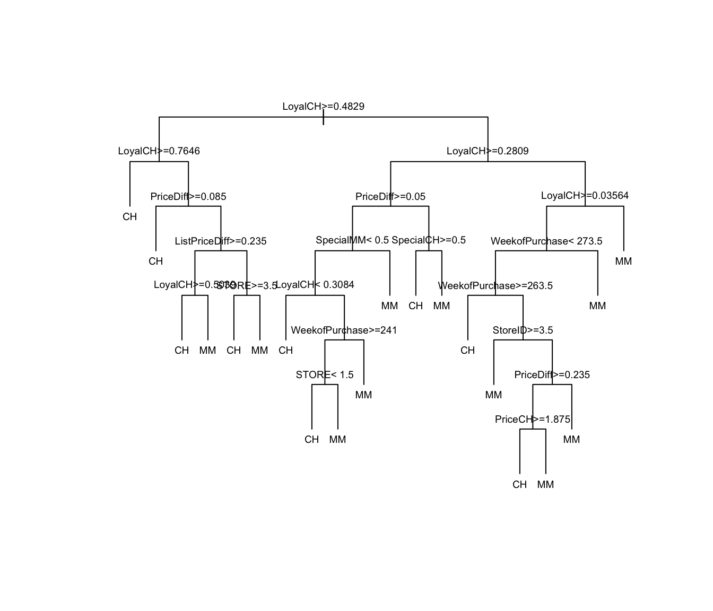
Cet arbre apprend le bruit des données d’entraînement : il faut l’élaguer.
5.2.4 Élaguer l’arbre
Le paramètre de complexité cp pénalise les arbres trop grands. rpart
estime l’erreur de chaque taille d’arbre par validation croisée (colonne
xerror).
#>
#> Classification tree:
#> rpart(formula = Purchase ~ ., data = train, method = "class",
#> control = rpart.control(cp = 0.001))
#>
#> Variables actually used in tree construction:
#> [1] ListPriceDiff LoyalCH PriceCH PriceDiff SpecialCH
#> [6] SpecialMM STORE StoreID WeekofPurchase
#>
#> Root node error: 315/800 = 0.39
#>
#> n= 800
#>
#> CP nsplit rel error xerror xstd
#> 1 0.5175 0 1.00 1.00 0.044
#> 2 0.0201 1 0.48 0.53 0.037
#> 3 0.0095 4 0.42 0.46 0.035
#> 4 0.0071 5 0.41 0.49 0.035
#> 5 0.0032 12 0.36 0.49 0.035
#> 6 0.0011 16 0.34 0.49 0.035
#> 7 0.0010 19 0.34 0.50 0.036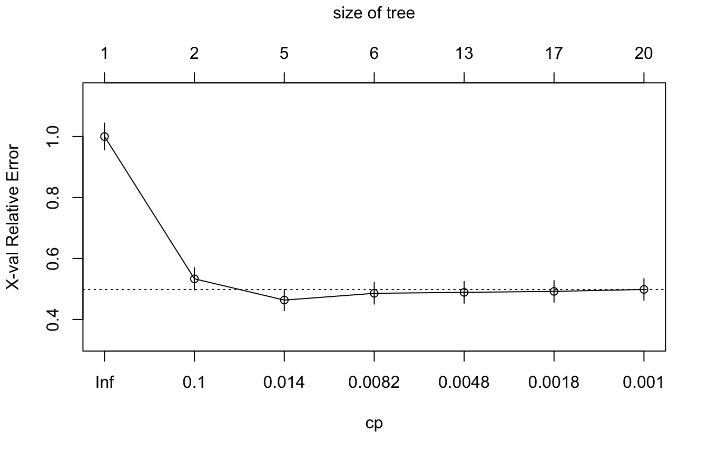
Règle usuelle : choisir le cp qui minimise xerror, ou le plus grand cp
dont xerror reste à moins d’un écart-type du minimum (règle « 1-SE »), ce qui
donne un arbre plus simple.
table_cp <- arbre$cptable
cp_optimal <- table_cp[which.min(table_cp[, "xerror"]), "CP"]
arbre_elague <- prune(arbre, cp = cp_optimal)
plot(arbre_elague, uniform = TRUE, margin = 0.08)
text(arbre_elague, use.n = TRUE, cex = 0.8, digits = 4) # digits : affichage des effectifs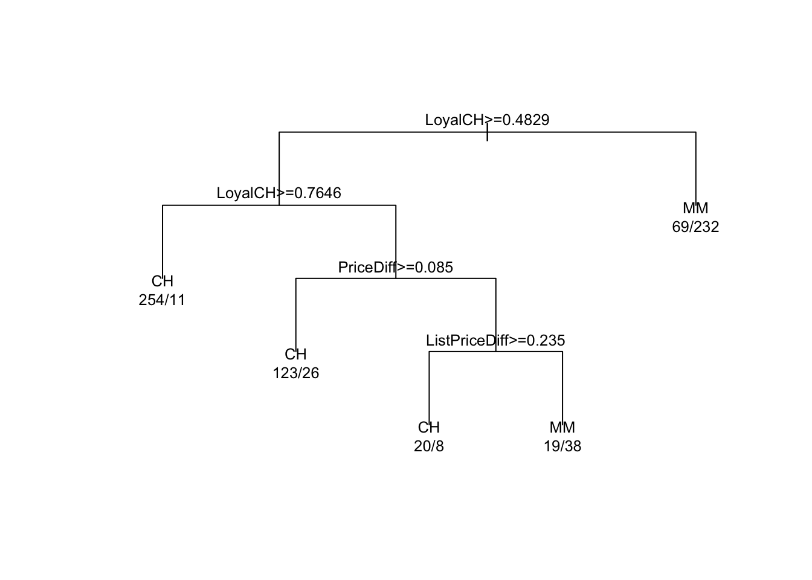
Lecture : chaque nœud indique une condition ; on va à gauche si elle
est vraie. Chaque feuille affiche la classe prédite et les effectifs CH/MM
d’entraînement. Le premier critère est la fidélité à Citrus Hill : les
clients peu fidèles à CH achètent majoritairement MM. Pour les clients à
fidélité moyenne, c’est la différence de prix qui fait basculer le choix.
L’arbre se traduit directement en règles commerciales.
#> LoyalCH SalePriceMM PriceDiff StoreID PriceMM
#> 154.8 14.9 14.6 12.8 11.2
#> ListPriceDiff DiscMM PctDiscMM WeekofPurchase PriceCH
#> 11.1 10.6 10.1 5.6 4.7
#> SalePriceCH SpecialCH Store7
#> 1.9 1.4 1.25.2.5 Prédire
classe_predite <- predict(arbre_elague, newdata = test, type = "class")
proba_mm <- predict(arbre_elague, newdata = test, type = "prob")[, "MM"]
head(data.frame(observe = test$Purchase, predit = classe_predite,
proba_mm = round(proba_mm, 2)))#> observe predit proba_mm
#> 1 CH CH 0.17
#> 11 CH CH 0.04
#> 13 CH CH 0.04
#> 16 CH CH 0.04
#> 22 CH CH 0.17
#> 24 CH CH 0.045.2.6 Matrice de confusion
On compare les classes prédites aux classes observées sur le jeu de test.
#> predit
#> observe CH MM
#> CH 136 32
#> MM 13 89On appelle « positif » la classe d’intérêt, ici l’achat de MM.
Prédit CH (négatif) |
Prédit MM (positif) |
|
|---|---|---|
Observé CH |
vrais négatifs (VN) | faux positifs (FP) |
Observé MM |
faux négatifs (FN) | vrais positifs (VP) |
| Indicateur | Formule | Question |
|---|---|---|
| Taux de bonne classification (accuracy) | (VP + VN) / total | Quelle part est bien classée ? |
| Sensibilité (rappel) | VP / (VP + FN) | Parmi les acheteurs de MM, combien sont détectés ? |
| Spécificité | VN / (VN + FP) | Parmi les acheteurs de CH, combien sont reconnus ? |
| Précision | VP / (VP + FP) | Parmi les clients ciblés, combien achètent vraiment MM ? |
evaluer <- function(confusion, positif) {
negatif <- setdiff(colnames(confusion), positif)
vp <- confusion[positif, positif]; fn <- confusion[positif, negatif]
vn <- confusion[negatif, negatif]; fp <- confusion[negatif, positif]
c(accuracy = (vp + vn) / sum(confusion),
sensibilite = vp / (vp + fn),
specificite = vn / (vn + fp),
precision = vp / (vp + fp))
}
round(evaluer(confusion, positif = "MM"), 3)#> accuracy sensibilite specificite precision
#> 0.833 0.873 0.810 0.736En marketing, le choix de l’indicateur dépend du coût des erreurs : envoyer un bon de réduction à un client qui n’en fera rien (faux positif) coûte le prix de l’envoi ; ne pas cibler un client réceptif (faux négatif) coûte une vente perdue. Une campagne bon marché (email) privilégie la sensibilité ; une campagne coûteuse (courrier, remise importante) privilégie la précision.
Le taux de bonne classification est trompeur quand les classes sont déséquilibrées. Si seulement 2 % des clients répondent à une campagne, un modèle qui prédit « personne ne répond » a 98 % de bonnes classifications… et ne sert à rien. L’exercice 5.2 en donne un exemple.
5.2.7 Courbe ROC et AUC
Un classifieur produit une probabilité ; la classe dépend d’un seuil (0,5 par défaut). Baisser le seuil augmente la sensibilité mais diminue la spécificité. La courbe ROC trace la sensibilité en fonction de 1 − spécificité pour tous les seuils possibles.
- Un classifieur parfait passe par le coin supérieur gauche.
- Un classifieur aléatoire suit la diagonale.
- L’AUC (aire sous la courbe) résume la courbe : 0,5 pour le hasard, 1 pour un classifieur parfait. C’est la probabilité qu’un individu positif tiré au hasard reçoive un score plus élevé qu’un individu négatif tiré au hasard.
Comparons l’arbre à la régression logistique du chapitre 4 :
logistique <- glm(Purchase ~ PriceDiff + LoyalCH + SpecialMM + SpecialCH,
data = train, family = binomial)
proba_log <- predict(logistique, newdata = test, type = "response")
roc_arbre <- roc(test$Purchase, proba_mm, levels = c("CH", "MM"), direction = "<")
roc_log <- roc(test$Purchase, proba_log, levels = c("CH", "MM"), direction = "<")
plot(roc_log, col = "darkblue", legacy.axes = TRUE)
plot(roc_arbre, col = "darkorange", add = TRUE)
legend("bottomright", col = c("darkblue", "darkorange"), lwd = 2,
legend = c(paste("Logistique, AUC =", round(auc(roc_log), 3)),
paste("Arbre, AUC =", round(auc(roc_arbre), 3))))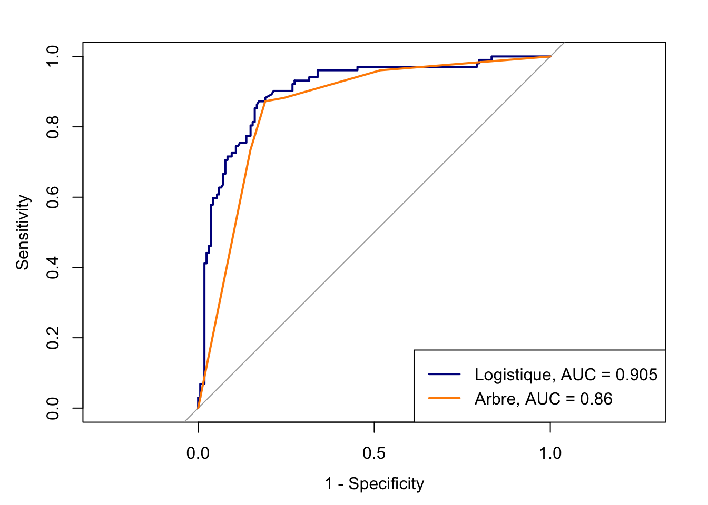
La courbe de l’arbre est formée de segments : un arbre élagué n’a que quelques feuilles, donc quelques valeurs de probabilité possibles. Ici, la régression logistique discrimine un peu mieux ; l’arbre reste plus facile à expliquer. Ce compromis entre performance et interprétabilité est fréquent.
Choisir un seuil : la fonction coords() donne le seuil qui maximise
sensibilité + spécificité (indice de Youden). En pratique, le seuil se choisit
avec les équipes métier, en fonction du coût des erreurs et du budget de la
campagne.
#> threshold sensitivity specificity
#> 1 0.389 0.8725 0.8274Les indicateurs doivent être calculés sur un jeu de test jamais utilisé pour construire ni régler le modèle. Mesurés sur le jeu d’entraînement, ils sont trop optimistes (voir la fuite de données au chapitre 1).
5.3 Résumé
- ACP : résumer \(p\) variables quantitatives par quelques axes non corrélés qui conservent le maximum d’inertie. ACP normée si les unités diffèrent.
PCA(données, quanti.sup = ..., quali.sup = ..., graph = FALSE);fviz_eig(),fviz_pca_var(),fviz_pca_ind(),dimdesc().- Cercle des corrélations : angle entre flèches = corrélation ; n’interpréter que les variables bien représentées.
- Les variables illustratives ne construisent pas les axes ; elles aident à les interpréter (valeurs-test).
- Arbre de décision : partitionnement récursif minimisant l’impureté
(Gini) ;
rpart(),printcp(),prune(),predict(). - Évaluer sur un jeu de test : matrice de confusion, sensibilité,
spécificité, précision ; courbe ROC et AUC avec
pROC. Choisir le seuil selon le coût des erreurs.
5.4 Exercices
Exercice 5.1 — ACP sur USArrests. Le jeu USArrests donne, pour les 50
États américains, le nombre d’arrestations pour 100 000 habitants pour
meurtre, agression et viol, ainsi que le pourcentage de population urbaine.
- Faut-il réaliser une ACP normée ? Justifier.
- Réaliser l’ACP. Combien d’axes retenir ?
- Interpréter les deux premiers axes à l’aide du cercle des corrélations.
- Quels États ont les profils les plus extrêmes ?
Solution
#> Murder Assault UrbanPop Rape
#> 18.97 6945.17 209.52 87.73#> eigenvalue percentage of variance cumulative percentage of variance
#> comp 1 2.4802 62.006 62.01
#> comp 2 0.9898 24.744 86.75
#> comp 3 0.3566 8.914 95.66
#> comp 4 0.1734 4.336 100.00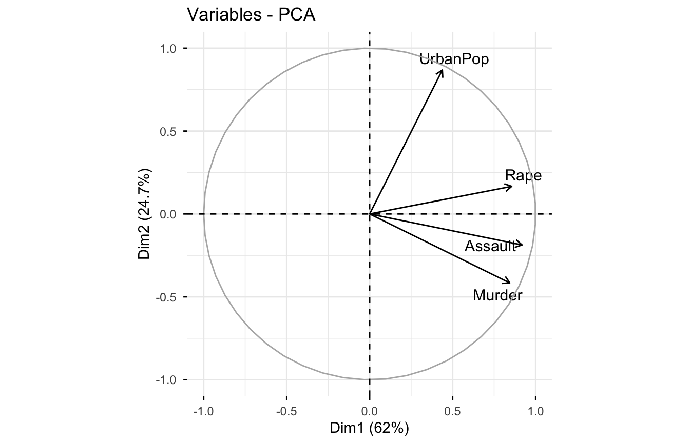
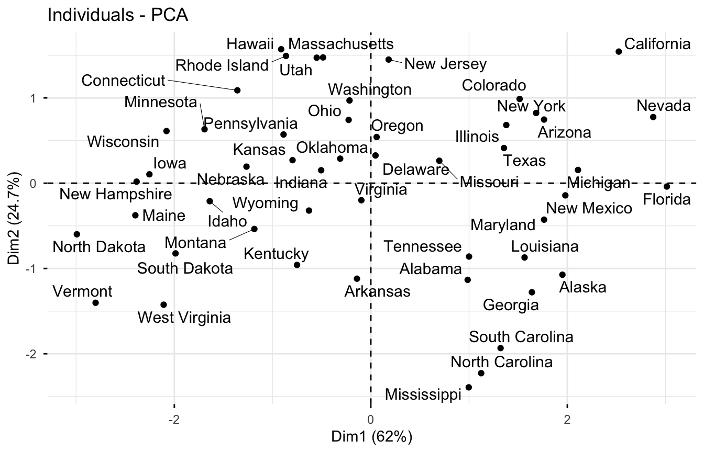
L’axe 1 (environ 62 % de l’inertie) regroupe les trois types de crimes : c’est
un axe de criminalité globale. L’axe 2 est porté par UrbanPop : il
oppose les États urbains aux États ruraux.
Exercice 5.2 — Ciblage d’une campagne d’assurance. Le jeu Caravan
(package ISLR) contient les données réelles de 5 822 clients d’un
assureur néerlandais, diffusées lors du concours CoIL Challenge 2000.
L’assureur voulait savoir quels clients cibler pour vendre une assurance pour
caravane (camping-car). Chaque client est décrit par 86 variables :
- 43 variables socio-démographiques (noms commençant par
M, par exempleMOSTYPE, le type de client, ouMKOOPKLA, la classe de pouvoir d’achat). Elles ne décrivent pas le client lui-même mais son quartier : tous les clients d’un même code postal ont les mêmes valeurs. La plupart sont codées en classes de 0 à 9 (par exemple, part des habitants du quartier ayant tel revenu) ; - 42 variables de détention de produits d’assurance : niveau des
cotisations par type de contrat, codé en classes (noms commençant par
P, par exemplePPERSAUTpour l’assurance automobile) et nombre de contrats (noms commençant parA, par exempleAPERSAUT) ; - la cible
Purchase: le client a-t-il souscrit l’assurance caravane (Yes/No) ?
Les variables de quartier illustrent une pratique courante en marketing (le géomarketing) et ses limites : on attribue à chaque client les caractéristiques moyennes de son voisinage.
- Quelle est la proportion de souscripteurs ? Que vaut le taux de bonne classification d’un modèle qui prédit toujours « No » ?
- Découper les données (70 % / 30 %) et construire un arbre de classification. Que prédit-il sur le jeu de test ?
- Utiliser plutôt les probabilités prédites : tracer la courbe ROC et calculer l’AUC.
- L’assureur peut contacter 10 % des clients. En ciblant les 10 % de clients du jeu de test aux probabilités les plus élevées, quelle part des souscripteurs atteint-il ? Comparer au hasard (10 %).
Solution
#> [1] 0.05977set.seed(1)
idx <- sample(nrow(Caravan), round(0.7 * nrow(Caravan)))
car_train <- Caravan[idx, ]
car_test <- Caravan[-idx, ]
arbre_car <- rpart(Purchase ~ ., data = car_train, method = "class",
control = rpart.control(cp = 0.002))
table(observe = car_test$Purchase,
predit = predict(arbre_car, car_test, type = "class"))#> predit
#> observe No Yes
#> No 1629 13
#> Yes 101 4#> Warning: glm.fit: fitted probabilities numerically 0 or 1 occurredscore <- predict(logit_car, car_test, type = "response")
auc(roc(car_test$Purchase, score, levels = c("No", "Yes"), direction = "<"))#> Area under the curve: 0.729cibles <- score >= quantile(score, 0.9) # les 10 % de meilleurs scores
sum(car_test$Purchase[cibles] == "Yes") / sum(car_test$Purchase == "Yes")#> [1] 0.3238Avec le seuil de 0,5, l’arbre ne prédit presque jamais « Yes » : son taux de bonne classification est élevé mais il ne sert à rien pour cibler. En classant les clients par probabilité et en ne contactant que les 10 % les mieux notés, on atteint une part des souscripteurs bien supérieure à 10 % : c’est ce gain (lift) qui justifie un modèle de ciblage. La régression logistique sur 85 variables peut produire des avertissements de convergence ; les modèles régularisés (hors programme) sont plus adaptés.
Pour aller plus loin
- F. Husson, S. Lê et J. Pagès, Analyse de données avec R, chapitre ACP ; vidéos de F. Husson sur YouTube (chaîne « François Husson »), en français.
- G. Saporta, Probabilités, analyse des données et statistique, chapitre 7.
- G. James et al., An Introduction to Statistical Learning, chapitres 8 (arbres) et 12 (ACP).